Admin Operations Manual
The CAD Pillar | Admin Operations Manual
Run The CAD Pillar day to day. Every admin screen, control and procedure, with the checks and the fixes.
Start here
This manual is for whoever runs The CAD Pillar day to day. Read chapters 1–3 on your first day. After that, use the task index, the daily checklist and the troubleshooting table as lookups.
How to use this manual
- Bold words are the exact labels on screen: buttons, menu items, tabs, column headings.
- "Open Queue → click Price it → click Set quote" means: click each item in turn.
- Paths such as
/are the page's web address afteradmin/ access thecadpillar.com. You can type them, but the sidebar always gets you there too. - Callouts:
- Before you commit marks an action that changes records, reaches a client, or cannot be undone.
- Known limit marks something the platform does not do yet, and the way round it.
- Names in examples (Northline Jewelers, DSG-0007, Rhino pod, "Asha") are fictional. Screenshots come from a throwaway test system filled with test orders (titles such as "E2E halo ring"), never from live data.
The platform in one page
The CAD Pillar sells jewelry CAD (3D models ready for casting) and renders to jewelry businesses. Three groups use one portal:
- Clients order, pay, review and download.
- The team prices, takes payment, confirms and delivers. The team is the admins, plus Sales, Ops and Finance staff.
- Pods do the work. A pod lead assigns each job to one of the pod's designers and checks the result (quality control, "QC") before the client sees it.
Work flows in one direction: admin → pod lead → designer, then back up through QC to the client.
| Stage | What happens | Who acts |
|---|---|---|
| 1. Brief | The client describes the piece in three short steps and sends it for a price | Client (or the team, for an order that came by email or WhatsApp) |
| 2. Quote | The team sets the category (A–L) and the price | Sales or Admin |
| 3. Payment | The client pays by card or UPI, or the team records a bank, Wise or PayPal transfer | Client, or Finance / Admin |
| 4. Pod and confirmation | The order joins a pod; the team confirms the brief, which starts the first-look clock | Admin (pod lead may confirm) |
| 5. Assignment | The pod lead gives the job to one designer | Pod lead (Admin only as an exception) |
| 6. Design | The designer models it, uploads four files, passes their own check and sends it to QC | Designer |
| 7. QC | The pod lead checks it, then passes it to the client or sends it back | Pod lead |
| 8. First look and changes | The client approves, or asks for changes (two rounds included within 14 days) | Client |
| 9. Delivery and close | The team marks it delivered, then closed. Pay becomes owed | Ops or Admin |
| 10. Payouts | The team pays designers and pod leads by bank transfer from an export | Finance or Admin |
Account types at a glance
Every person signs in to the same portal at thecadpillar.com/sign-in. What they see depends on their role (the kind of account) and their status (whether the account may act). Navigation is not access control: the database checks every action again, so a person never gains an ability by finding a link.
| Account type (as shown on Access) | Workspace label | Sidebar colour | Lands on after sign-in | Main job |
|---|---|---|---|---|
| Client | Client workspace | White | Home (/) | Orders CAD designs and renders, pays, reviews, approves, downloads |
| Designer | Designer workspace | White | Home (/) | Models the jobs their pod lead assigns, checks them, sends them to QC |
Pod lead (stored as role QC) | Pod lead workspace | Black | QC queue (/) | Assigns jobs within their pod, runs quality control, places orders for clients |
| Ops, Sales, Finance | Admin workspace | Black | Queue (/) | Run the business; each has part of the admin powers |
| Admin = Ops + Sales + Finance together | Admin workspace | Black | Queue (/) | Everything |
What makes someone an "Admin"
The product has no single "Admin" role. A person is a full Admin when their account holds all three staff roles: Sales, Ops and Finance. One of these is their primary role (chosen on the Access screen); the other two are additional roles. The Access screen shows additional roles as small "+ Sales" / "+ Finance" tags beside the role menu.
| A staff member who holds only… | Can | Cannot |
|---|---|---|
| Sales | Set quotes; work Applications and Leads | Mark payments, assign, deliver, close, manage people or settings |
| Ops | Change roles and suspend accounts on Access; assign a designer as an exception; deliver and close orders; send a dispute back for rework; work Applications and Leads | Quote, record payments, refund, manage designers, pods or settings |
| Finance | Mark a transfer received; refund; release escrow; export and mark payouts paid | Quote, assign, deliver, manage people or settings |
| Sales + Ops + Finance (full Admin) | All of the above, plus Designers, Pods, Clients, Settings, Credits, account managers, pay rates, designer documents and bank details | — |
Account status
| Status (Access screen pill) | Meaning | Can sign in | Can act |
|---|---|---|---|
| Active | Normal account | Yes | Yes |
| Pending | Account exists but is not yet active. Designers added by the team start here until they sign the designer agreement. | Yes | Only what their role allows before activation (a designer cannot be assigned work) |
| Suspended | Frozen by an Ops member or Admin. Nothing is deleted. | Yes, but their actions are refused | No |
There is no "delete account". Orders, files, money records and the audit history all refer to the person, so the product suspends instead.
Two ideas used throughout
- Pod. A small team: one pod lead and the designers placed in it. A pod lead sees and assigns only their pod's designers and orders. An order joins a pod when it is paid or confirmed (automatically while only one pod has a lead; otherwise an Admin chooses).
- Anonymity. A client never sees who designed their piece; a designer never sees who the client is or what the client paid. To the client, every team member is "Your team". This is enforced by the database, not by hiding buttons.
Your first sign-in
Signing in
- Go to thecadpillar.com/sign-in.
- Enter the email address your account was opened with.
- Enter the code that arrives by email. No password is needed. If you set a password under Account → Sign-in and security, you can use it instead.
- The portal opens on your role's starting page (see Account types at a glance).
A new client who signs up without being invited is asked once, on Welcome, for their business details. Team members, designers and clients the team created skip that step.
Finding your way around

- Sidebar (computer). The workspace name and your destinations, grouped (for example Work, Money, People, System). The square icon beside the bell collapses the sidebar to icons and expands it again.
- Bell. Your notifications, newest first, with an unread count. Open it to read them; Mark all read clears the count. While the portal is open, anything new also pops up briefly with Open.
- Search or jump to… ⌘K. Press Ctrl + K (⌘ + K on a Mac), or click the bar. Type an order reference (for example
MJ1-RN-C-4), a client code or a page name. Esc closes it. - Your name (bottom of the sidebar). Opens a small menu with Account and Sign out.
- Unread counts. The number beside Messages counts unread messages.


On a phone
The sidebar becomes a bar along the bottom of the screen. It shows your first two destinations, Messages (designers also get Earnings), and More. Roles that create orders also get a raised + button. More opens every other destination, plus Sign out. The top bar shows the page name, the bell and the search button.

Your account page
Open your name → Account (on a phone: More → Account).
| Section | Who sees it | What it is for |
|---|---|---|
| Your identity, roles | Everyone | Your name and email, and your role(s) |
| Client code | Clients | The code on all your orders (made from your business name) |
| Account reference | Everyone | Quote it when you contact the team or support |
| Your business | Clients | Business name, your name, work email, WhatsApp / phone, how you heard about us |
| Master instructions | Clients | Your factory's standing rules, shown on every order to the designer and pod lead (up to 4,000 characters; leave out company name and contact details) |
| Your logo | Clients | Shown on your 3D preview links (PNG or JPEG, up to 2 MB) |
| Sign-in and security | Everyone | Email, password, two-step sign-in, and the devices you are signed in on |
| Payout details | Designers | The bank account your earnings are paid into |
| Clients | Which optional emails you get (order emails always arrive) | |
| On this device | Everyone | Time zone (times on screen follow it; "This device" follows your computer or phone) and Notifications (push alerts on this device) |
| Sign out | Everyone | Ends the session on this device |
What you see the first time
As an admin you land on the Queue. The sidebar has these groups:
| Group | Item | What it opens |
|---|---|---|
| Work | Queue | Orders that need a team move now, with stage counters (details) |
| Work | All orders | Every order, with tabs, search and Export CSV (details) |
| Work | Messages | Every order's client and designer conversations (details) |
| Work | Create order | Place an order for a client who wrote by email, WhatsApp or phone (details) |
| Money | Billing | Money in and out, late credits, the way to Payouts (details) |
| People | Clients | Every client by code, account managers, public numbers, where clients come from (details) |
| People | Access | Every account: role, status, suspend and reinstate (details) |
| People | Applications | Designer applications from the website (details) |
| People | Leads | Website contact-form messages (details) |
| System | Settings | The numbers the platform runs on, and feature switches (details) |
| More | Designers | Your designers: sign-in status, pod, pay rate, bank details, documents (details) |
Four admin pages have no sidebar item. Credits opens from the Queue alert or Billing. Payouts opens from Billing. Emails opens from Settings → Email previews. Pods opens from Access → Pods.
On a phone the bottom bar shows Queue, All orders, Messages and More, with a raised + for Create order.
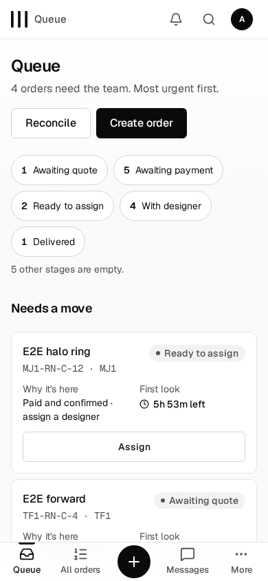
What do you need to do?
Find the task, then follow the link.
Every day
- Work through the daily checklist
- Read the Queue and its counters
- Find any order
- Answer client and designer messages
Orders
- Place an order for a client who emailed or used WhatsApp
- Price an order (set a quote)
- Record a bank, Wise or PayPal payment
- Choose or change an order's pod
- Confirm an order and start the clock
- Assign a designer yourself (exception)
- Move a job to another designer, or take it back
- Resolve a pod lead's escalation
- Follow QC and the client's review
- Deliver and close an order
- Cancel an order or refund a client
- Resolve a dispute ("Raise a problem")
- Decide a late first-look credit
- Decide a spec claim
- Write master instructions for a client
- Issue a QC certificate that is missing
People
- Understand "exists" versus "can receive work"
- Review a designer application
- Add designers and get them working
- Place a designer in a pod, or remove them
- Set a designer's own pay rate
- Record bank details and identity documents
- Make someone a pod lead and give them a pod
- Create a pod, change its lead, add or remove designers
- Change someone's role
- Make someone a full Admin
- Suspend or reinstate an account
- Name an account manager for a client
- Work the website contact leads
Money
System
- Change a setting (clock, pay, densities)
- Turn a feature on or off
- Check whether emails reach clients
- Export data for a report
- Find out who did what (audit history)
References
- Permissions matrix
- Status and handoff table
- Troubleshooting by symptom
- Screen-by-screen reference
- Glossary
Daily operations
Daily operating checklist
Work top to bottom. Most days it takes 15–20 minutes. The live-support hours are 3 PM to midnight India time, so the busiest window is the US morning.
| # | Where | Look for | Do |
|---|---|---|---|
| 1 | Queue → red and grey alerts above the list | "First look missed…", "…escalated by a pod lead", "…dispute open", spec claims | Decide / Review / Show each one (credits, escalations, disputes, claims) |
| 2 | Queue → Awaiting quote | New briefs (portal and team-placed) | Open each → Set quote (how) |
| 3 | Queue → Awaiting payment | Quotes not yet paid; transfers that arrived | Mark paid for transfers received (how); message slow payers |
| 4 | Queue → Ready to assign | Rows saying "Paid · choose a pod" or "Paid · confirm the order…" | Choose the pod, then Confirm (pod, confirm) |
| 5 | Queue → Ready to assign | Rows saying "Paid and confirmed · assign a designer" whose clock is running down | Check the pod lead is on it (Team board via the order's pod). Assign yourself only as an exception (how) |
| 6 | Queue → With designer and In QC counters | Jobs stuck for hours; the First look column turning red | Open the order; message the pod lead in the designer conversation |
| 7 | Messages → Needs reply | Clients waiting on the team, especially on orders with no pod yet | Reply in the Client tab (how) |
| 8 | Queue → Ready to deliver and Delivered | Approved orders not yet delivered; delivered orders not closed | Deliver, then Close (how) |
| 9 | Applications and Leads | New designer applications and contact messages | Accept / Reject; Mark handled |
| 10 | Designers | Anyone Waiting to sign in, Not in a pod, or with No bank details | Chase them; place them in a pod (how) |
Weekly: export and pay the owed payouts (how); check Billing against the Razorpay dashboard; look at Performance per pod (opens from a pod lead's view, or from an escalation alert); check that Settings → Email previews still shows the mode you expect.
The Queue
Open: sidebar → Queue (/). This is your home page.
The Queue is a to-do list for the team. It lists only the orders where the team has the next move, ranked: disputes first, then the nearest first-look deadline, then the oldest.
Top right.
- Reconcile opens Billing.
- Create order opens the form for an order placed on a client's behalf.
Stage counters. Each box counts the orders currently in that stage, team-wide. Click one to filter the list to that stage. Click it again, or click Clear filter, to go back.
| Counter | Counts orders whose status is | Team move? |
|---|---|---|
| Awaiting quote | Submitted | Yes: price it |
| Awaiting payment | Quoted | No (the client pays), unless you record a transfer |
| Ready to assign | Paid | Yes: choose the pod, confirm, assign |
| With designer | Assigned, In progress, Revision requested | No: the designer's turn |
| In QC | Work submitted, In QC review | No: the pod lead's turn |
| With client | Ready to preview | No: the client's turn |
| Ready to deliver | Approved | Yes: deliver |
| Delivered | Delivered | Yes: close |
| Ready for payout | Closed | Yes: pay the team |
| Dispute | Disputed | Yes: resolve |
The counters have no date range. They show the state right now.
Alerts (above the list, only when something needs a decision):
| Alert | Button | Opens |
|---|---|---|
| "First look missed on N orders. Credits are waiting for your decision." | Decide | Credits |
| "N jobs escalated by a pod lead." | Review | Performance (escalation list) |
| "N disputes open. The client is waiting on the team." | Show | The Queue filtered to Dispute |
| "Wall/Prong/… claim" with order, client and designer references | Review | The order's spec-claim panel |
The list ("Needs a move").
| Column | Shows |
|---|---|
| Status | The stage pill (black for Dispute) |
| Order | The job's title, the order reference (for example TF1-RN-C-4) and the client code |
| Why it's here | One sentence, for example "Paid and confirmed · assign a designer", "Set category and price", "Via WhatsApp · check the brief and price it" |
| First look | Time left on the clock; Clock not started; Done when the first look was on time; Missed |
| (action) | One button: Price it, Choose (pod), Confirm, Assign, Deliver, Close, Release, Resolve, or Open |
Click anywhere on a row to open the order. An empty Queue says Queue clear: nothing needs the team.
All orders
Open: sidebar → All orders (/).
Every order, by reference.
- Tabs narrow the list:
- All.
- Open: not finished.
- Needs staff: waiting on the team (Submitted, Paid, In QC review, Disputed, Approved, Delivered).
- Closed: closed, payout released, cancelled or refunded.
- Search orders finds by order, account (client code) or designer reference.
- Every stage filters by the same stages as the Queue.
- Save this view keeps the current tab, search and stage as a named view. Saved views live in this browser only and are not shared with other admins.
- Export CSV downloads the orders as a spreadsheet file.
- Create order opens the on-behalf form.
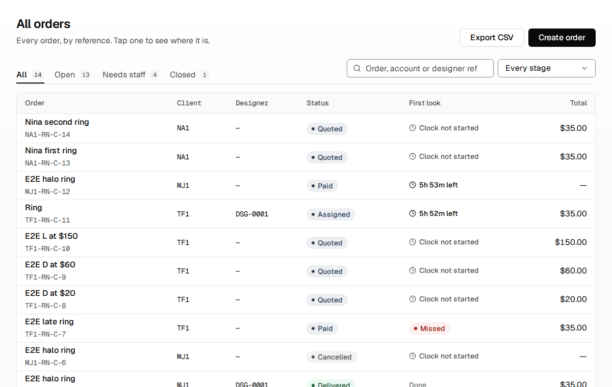
The order page (team view)
Open: click any order row (Queue, All orders, Billing, a notification).
The team's order page always has the same shape:
- Next step (top). The status pill, one sentence saying where the order stands, the first-look line, and the one action the order needs now. Every other action your role may take sits under Other actions ›: click it to expand.
- Brief. The client's answers. Open shows the full brief with photos.
- Conversations. One card with a Client tab and a Designer tab ("The designer never sees this" / "The client never sees this").
- Files, Revisions and Timeline (every recorded event, oldest first).
- Order card (right; below on a phone):
- Pod, Designer, Client (code), Category (with tier and hours);
- Price, Designer pay, Pod pay, Held in escrow;
- "Payouts are N% of the price", with a warning above 40%;
- links to the Full brief, Certificate, Weight sheet and Summary sheet once QC has passed;
- the order ID.
- Latest activity, the client's Master instructions and any spec claims.
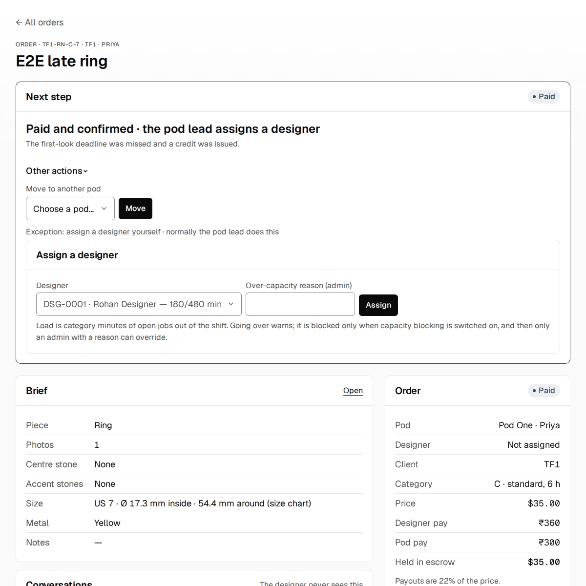
What the Next step card offers, in priority order:
| The order is… | The card offers | Who sees it |
|---|---|---|
| Submitted | Category, Price $ (optional), Deadline h (G–L), Set quote | Sales, Admin |
| Quoted | Paid by, Reference, Mark paid | Finance, Admin |
| Paid, no pod | Choose a pod… and Choose | Admin |
| Paid, not confirmed | Confirm order | Admin, pod lead |
| Paid and confirmed (admin view) | The sentence "the pod lead assigns a designer"; assigning yourself is under Other actions | Admin |
| In QC review (pod lead) | Open the QC review | Pod lead |
| Approved | Delivered | Ops, Admin |
| Delivered | Closed | Ops, Admin |
| Closed | Release payout | Finance as primary role only (why) |
| Disputed | The Dispute panel replaces the card | Ops, Finance |
Running an order from start to finish
Each section below is one step of the order's life, in the order it happens. For the whole picture in one table, see Status and handoff table.
Intake: where orders come from
There are two ways in:
- The client orders in the portal. They choose New order → CAD design (or Renders), answer the three brief steps, and press Send for a price. The order arrives on the Queue as Awaiting quote. The client gets the "Order received" email. No one on the team is notified: the Queue is where you see it.
- The team places it for them ("on behalf"), when the request came by email, WhatsApp or phone. See the next section.
A client who wrote to you before having an account can be created in the same form.
Place an order for a client
Who: an Admin or a pod lead. Before you start: have at least one screenshot of the client's request (PNG or JPEG).
Open: sidebar → Create order (/), or Queue / All orders → Create order.
- Find the client. Type their business, name, email, phone or client code into Find the client… and click Search. Click the right client under 1. Client.
- Or a new client, if "No client found":
- Enter Business name, Contact name, Email and WhatsApp / phone (with country code).
- This opens their account. They later sign in with this email, using a code instead of a password.
- An email that already has an account is reused, not duplicated.
- Under 2. The order, fill in:
- Came by: Email, WhatsApp or Phone.
- Product.
- Service: CAD, Render, or CAD + render.
- Received at (optional).
- Pod. An admin may leave No pod yet (admin).
- Under What they asked for, write the request. The client sees this as the first message in their conversation, so write it for them.
- Under 3. Screenshots of the request, click Choose screenshots and add at least one (up to 20).
- The client and the team see them.
- Designers never do.
- Email the client that the order is placed is ticked by default: the client gets the "Order placed for you" email and an in-app notice. Untick it if you will message them yourself.
- Click Place order.
What happens next. The order page opens with an intake panel:
- how the order came in;
- the screenshots;
- Send on WhatsApp, which opens WhatsApp with a ready-written message containing the order link (you still press send there);
- Write an email, which opens your email app with the same message.
Fill in the brief on the order (the team may write it for on-behalf orders), then price it. The first-look clock starts only when the order is paid and confirmed.
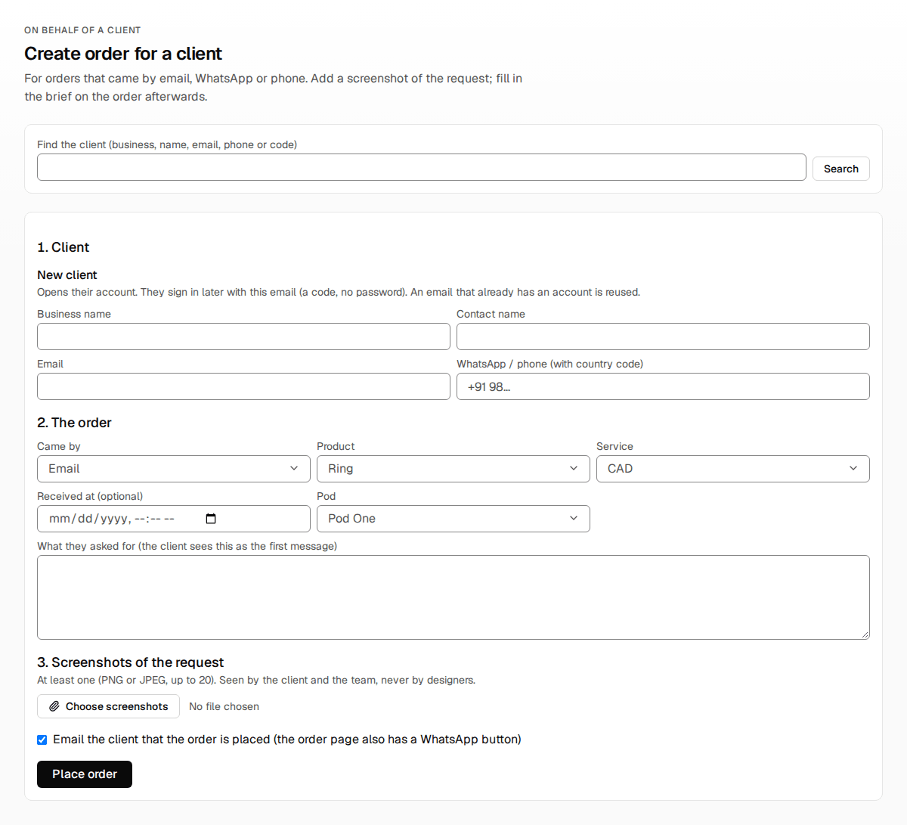
Price an order (set a quote)
Who: Sales or Admin. When: the order is Submitted (Queue: Awaiting quote, button Price it).
| Category | Minutes | Tier | Default price (band) |
|---|---|---|---|
| A, B, C | 15, 30, 45 | Standard | $35 |
| D, E, F | 60, 90, 120 | Standard | $85 |
| G, H, I, J, K, L | 180–480 | Complex | from $120 (enter the price) |
- Open the order. Read the Brief card and any Master instructions.
- In the Next step card, choose the Category (A–L) from the table above.
- Leave Price $ (optional) empty to use the band price. Or enter the price in US dollars, for example
35or120.50. - For G–L only, enter Deadline h (G–L): the hours to the first look. It is required for complex orders.
- Click Set quote.
Check. The status becomes Quoted. The Order card shows Price, Designer pay and Pod pay, and "Payouts are N% of the price". If that share is above the Payout warning setting (40% by default), the line ends "— above the 40% limit." The warning does not block anything. It is there to stop a loss-making price.
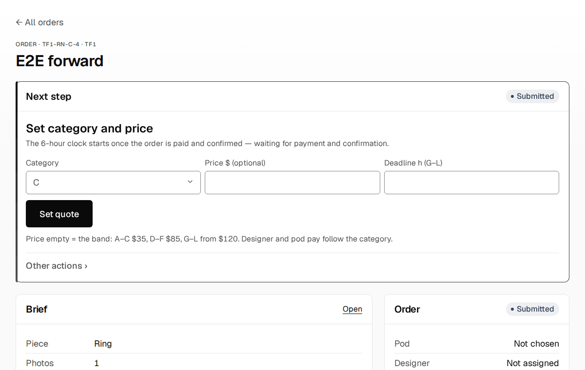
Record a transfer payment
Who: Finance or Admin. When: the order is Quoted and the money arrived outside the card checkout: a Wise transfer, a bank transfer, PayPal, or another method.
- Open the order. The Next step card shows Paid by and Reference.
- Choose Paid by: Wise transfer, Bank transfer, PayPal or Other.
- Enter the transfer's Reference (up to 120 characters). Your bank or Wise shows it.
- Click Mark paid.
Card and UPI payments need nothing from you. The client presses Pay & start. Razorpay confirms the payment to the platform, and the order becomes Paid by itself, usually within seconds. If a client says they paid but the order still shows Quoted, see troubleshooting.
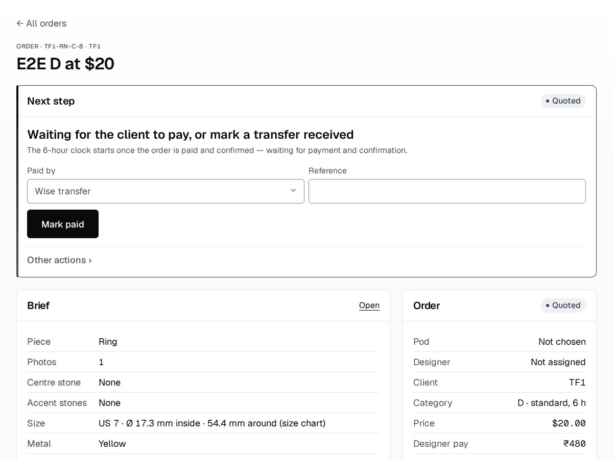
Choose or change an order's pod
Who: Admin. When: the order is paid (or earlier) and has no pod, or you want it in another pod.
- Automatic: when an order is paid or confirmed and exactly one pod has a lead, it joins that pod by itself.
- With more than one pod led: the Queue row reads "Paid · choose a pod". Choose the pod lead in Choose a pod…, then click Choose (on the Queue row, or in the order's Next step).
- To move it: open the order → Other actions › → Move to another pod → choose → Move. This is offered while the order is Submitted, Quoted, Paid or Assigned.
Confirm the order (start the clock)
Who: Admin or the order's pod lead. When: the brief is complete and any open questions are answered. This is possible from Submitted until In progress, once per order.
- Open the order.
- Click Confirm order. It is in the Next step card when the order is paid and has a pod; otherwise it is under Other actions ›.
Check: the First look column on the Queue shows a countdown, and the order says "First look due by …".
Assign a designer (admin exception)
Assigning is the pod lead's job. The admin's page says "Paid and confirmed · the pod lead assigns a designer". Assign yourself only when the pod lead cannot: absent, or about to miss the clock.
Before you start:
- the order is Paid, confirmed, in a pod, and has no designer;
- the designer is in that pod and is assignable (what that means).
- Open the order → Other actions › → Exception: assign a designer yourself · normally the pod lead does this.
- Choose the Designer. Each option reads "DSG-reference · Name — open/shift min". Greyed options marked (not signed up) cannot be chosen.
- If the job would push the designer over their shift (480 category minutes by default), enter an Over-capacity reason (admin). While Block assignment over shift capacity is off (the default), going over only warns.
- Click Assign.
What happens:
- The status becomes Assigned.
- The designer is notified "You have been assigned to an order."
- Designer pay and pod pay are reset at this designer's rate (recorded in the audit history).
An order can be assigned only once. To change designer later, move it.
Move a job to another designer, or take it back
Who: the order's pod lead, or an Admin. When: the job is Assigned, In progress or Revision requested.
Open: the order → Other actions › → Move it to another designer, or take it back. A pod lead also has the same controls on the Team board, under each job card → Move, take back or escalate.
- Move:
- Choose Move to… (only designers in the same pod are offered).
- Write Why it moves. A reason is required once work has started (status In progress or Revision requested); it is optional while the job is only Assigned.
- Click Move job.
- The new designer must press Start work.
- The old designer is notified "A job was moved to another designer".
- Take back:
- Write Why it is taken back (required once work has started).
- Click Take back from the designer.
- The order returns to Paid with no designer, and waits for a designer again.
- The designer is notified, and so is every admin.
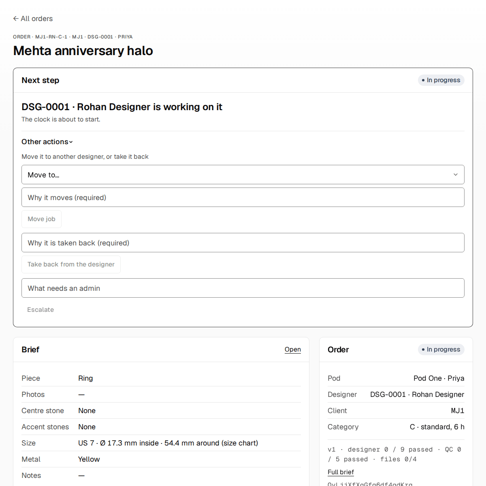
Resolve an escalation
A pod lead escalates a job when it needs an admin (from the Team board: Escalate, with "What needs an admin"). Every admin is notified "A pod lead escalated a job", and the Queue shows "N jobs escalated by a pod lead" → Review.
- Click Review. It opens Performance with the Escalated to admin list.
- Read the reason and do what is needed. Usually that is messaging the designer, moving the job, or answering the client.
- Type what you did in the What was done box and click Resolve. The pod lead is notified "An admin resolved your escalation".
Follow QC and the client's review
Admins watch this stage; they do not perform it.
- Designer sends to QC. The order goes straight to In QC review. The pod lead is notified, and the client is told "Work has been submitted on your order."
- Pod lead's review. The pod lead marks five QC manager lines Pass or Fail and, for CAD, records the measured specification. Then:
- Approve · pass to client: the order becomes Ready to preview and the first-look clock stops. The first look counts as on time if it happens before the deadline.
- Send back · revision needed: the order becomes Revision requested. The failed lines become the designer's notes. A send-back does not use up the client's rounds.
- Client's review. The client can Approve this design, Send changes (two rounds included within 14 days of the first look), or Raise a problem. After the rounds are used, a change is a new order ("Order a change"), priced separately; it notifies the pod lead "…It needs a quote." and appears on the Queue.
Deliver and close
Who: Ops or Admin.
- When the client approves, the Queue row reads "Client approved · deliver the files" with Deliver. Open the order and click Delivered in Next step.
- The order becomes Delivered.
- The client is notified and emailed "Files delivered".
- Their files are already unlocked: they unlock at approval.
- When nothing more is owed to the client, open the order and click Closed. The Queue row says "Delivered · close the order".
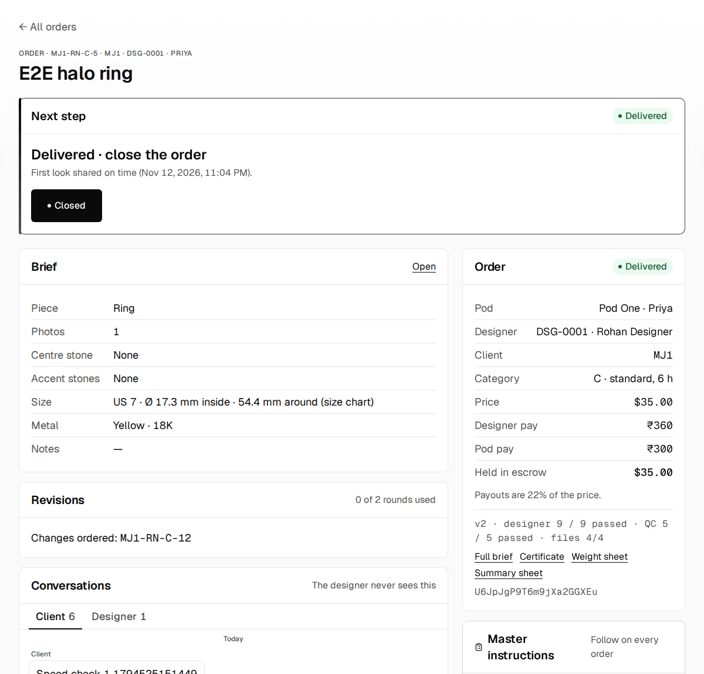
Cancel an order or refund a client
| Situation | Who | How |
|---|---|---|
| Draft not wanted | Client | Order → ⋯ (More) → Delete draft |
| Sent or quoted, not paid | Client | Order → ⋯ → Cancel order, or Decline this price on the Pay screen |
| Paid, work not wanted | Finance | Order → Other actions › → Refund client (offered while Paid or Disputed) |
| Disputed and cannot be fixed | Finance | Dispute panel → Refund the client… (disputes) |
The team has no "cancel" button for an unpaid order: the client cancels it.
Resolve a dispute
A client raises a problem from their order → ⋯ → Raise a problem (while the order is In progress or Ready to preview). The order becomes Disputed and freezes. The client sees "We're looking into a problem", and is emailed. The designer is notified. The Queue shows "N disputes open…" → Show, and the row's reason is the client's own words.
- Open the order. The Dispute panel shows "Dispute open" and the client's reason.
- Talk to the client in the Client conversation before deciding.
- Decide:
- Send back for rework (Ops). The order returns to In progress with the same designer. The client and designer are told it was resolved.
- Refund the client… (Finance). A confirmation asks you to type
refund.
Decide a late first-look credit
When a standard order (A–F) misses its 6-hour first look, the platform creates one pending credit for the full amount paid. It does this once, however many times the check runs. The client is emailed "Order delayed". The credit waits for you; the client sees nothing about it until you decide. Complex orders are not credited.
Open: Queue alert "First look missed…" → Decide, or Billing → Credits (/).
- Each row shows the order, the amount, and when it "was due".
- Choose the Decision:
- Apply to next order: the credit comes off their next order.
- Refund.
- Partial credit: enter Amount $ (partial) and a reason.
- Reject: a reason is required.
- Use Reason (partial / reject) where needed.
- Click Decide.
The client is notified and emailed "Credit decided". The same credit cannot be decided twice: a second tab is refused.
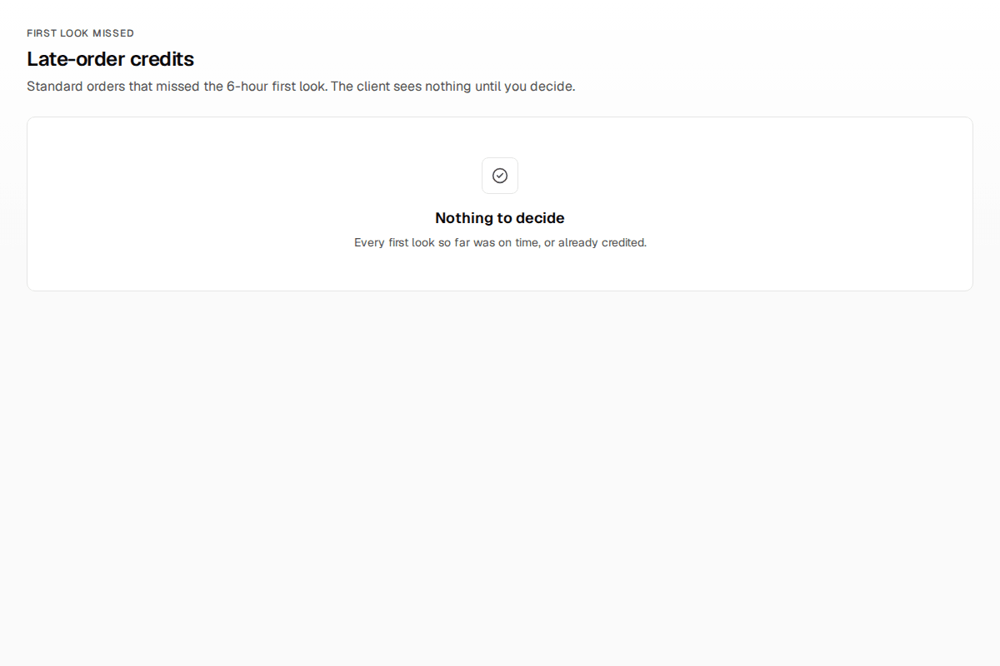
Decide a spec claim
After delivery the client may open a spec claim, for example "Wall thinner than the certificate says". They do it from the order → Spec guarantee → A file broke its spec sheet? Open a claim, within 30 days, one at a time. They upload the file they cast from and photos. The pod lead is notified to re-measure, and the Queue shows the claim with Review.
- Review opens the order's Spec claims panel. It shows whether the file matches the version delivered (an edited file is not covered), plus the casting details, Their file and Photo.
- Enter the Re-measured value and a Decision note.
- Click Uphold · free fix + credit or Spec met · reject.
Upholding creates a free fix order (the pod lead is notified to assign it, with the 6-hour clock running) and credits the CAD fee to the client's next order. Rejecting tells the client the result. The pod lead or an admin may decide.
Write master instructions for a client
A client's Master instructions are their factory's standing rules. The designer, the pod lead and admins see them on every order. The client normally writes them on Account.
To write or correct them for the client:
- Open any of the client's orders.
- In the Master instructions card (right column), click Edit for this client. The link reads Add for this client if there are none yet.
- Change the text (up to 4,000 characters).
- Click Save for every order of this client.
Issue a missing QC certificate
After QC passes, the Order card links Certificate, Weight sheet and Summary sheet. If a CAD order has no certificate yet, an Issue certificate button appears there. Click it to make the certificate from the recorded QC.
People: clients, designers, pod leads and staff
Exists versus can receive work
A person can be on the platform for days without being able to do anything useful. Work reaches a designer only when every row of this table is true:
| # | Condition | Where you see it | Set by |
|---|---|---|---|
| 1 | A sign-in account exists for their email | Access lists them | Designers → Add designers, or the person signing up |
| 2 | Their role is Designer | Access → Role | Add designers sets it |
| 3 | They have signed in and signed the current designer agreement | Designers: status Active (not Waiting to sign in); Pods: no "Not signed" tag | The designer, on their first sign-in |
| 4 | Their status is Active, not Suspended | Access → Status | Signing the agreement makes it Active; Ops or an Admin can suspend |
| 5 | They are in a pod | Designers: Pod is not "Not in a pod" | An Admin, on the designer's page or on Pods |
| 6 | The order is in that pod | The order's Pod | Automatic, or an Admin (choose a pod) |
| 7 | They have room in the shift (only if capacity blocking is on) | Load "270/480 min" in the assign list | Settings → Designer capacity per shift |
What each person sees in between:
| Moment | Admin sees | Pod lead sees | Designer sees |
|---|---|---|---|
| Added, not yet signed in | Designers: "Waiting to sign in"; Access: Pending | Nothing, until the designer is in their pod. Then the name shows greyed out: "· not signed" (Team board) / "(not signed up)" (order page) | Nothing (they have not signed in) |
| Signed in, agreement not signed | Same | Same | Home: "Finish onboarding · Sign the designer agreement…" → Continue |
| Agreement signed, no pod | Designers: Active, "Not in a pod"; page header warns "…not in a pod yet: their pod lead cannot see or assign them" | Nothing | Home: "No open jobs" |
| Active and in a pod | Designers: Active, pod name | The name in Assign to…, selectable, with their load | Jobs once assigned |
| Suspended | Access: Suspended | Greyed out: "not signed" / "(not signed up)" (the same tag is reused) | Their actions are refused |
Designer applications
Who: Ops, Sales or Admin. Open: sidebar → Applications (/).
Applications come from the website form (apply-designer). Each card shows:
- the applicant, their years of experience, Email, Phone and Categories;
- when they Applied;
- the Portfolio link and any uploaded files.
Tabs: To review, Accepted, Rejected, All.
- Read the card and open the portfolio.
- Optionally write a Review note. A note is required to reject: "Add a short note on why, so the decision is legible later."
- Click Accept or Reject. Reopen puts a decided application back to To review.
Add designers and get them working
Who: Admin. Open: sidebar → More → Designers (/).
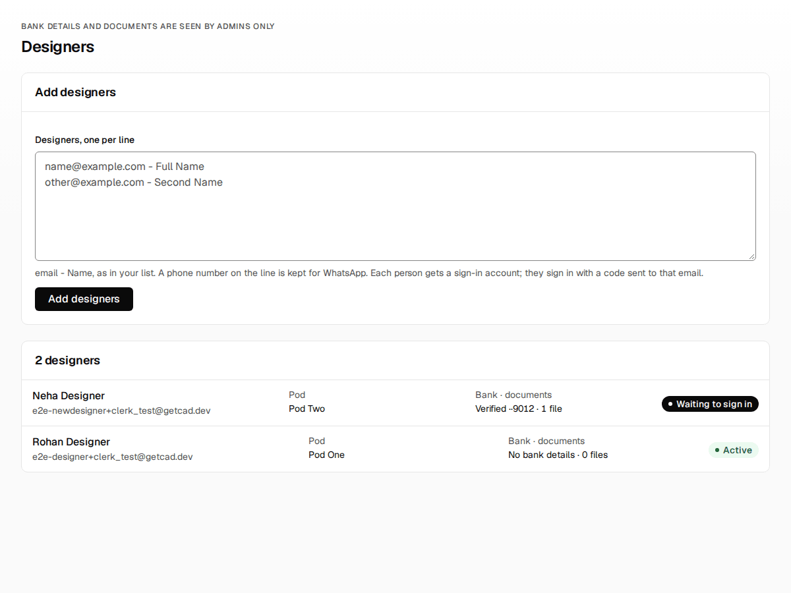
- In Add designers, paste one designer per line as
email - Name, for exampledesigner@example.com - Ravi Kumar. A phone number on the line is kept for WhatsApp. - Click Add designers.
- The result lists Added, Already on file, and any line it could not read.
- Each person gets a sign-in account with role Designer and status Pending.
- An email that belongs to a client or team account is refused.
- Tell each designer to sign in.
- Click the designer's name to open their page, then:
- place them in a pod;
- record bank details;
- optionally set an own rate.
- When they sign the agreement, their status becomes Active. If they are in a pod, the pod lead can now assign them.
The list shows each designer's name and email, Pod, Bank · documents and status:
- Bank: No bank details, To check ··1234, Verified ··1234, Rejected.
- Status: Waiting to sign in, Active, Pending, Suspended.
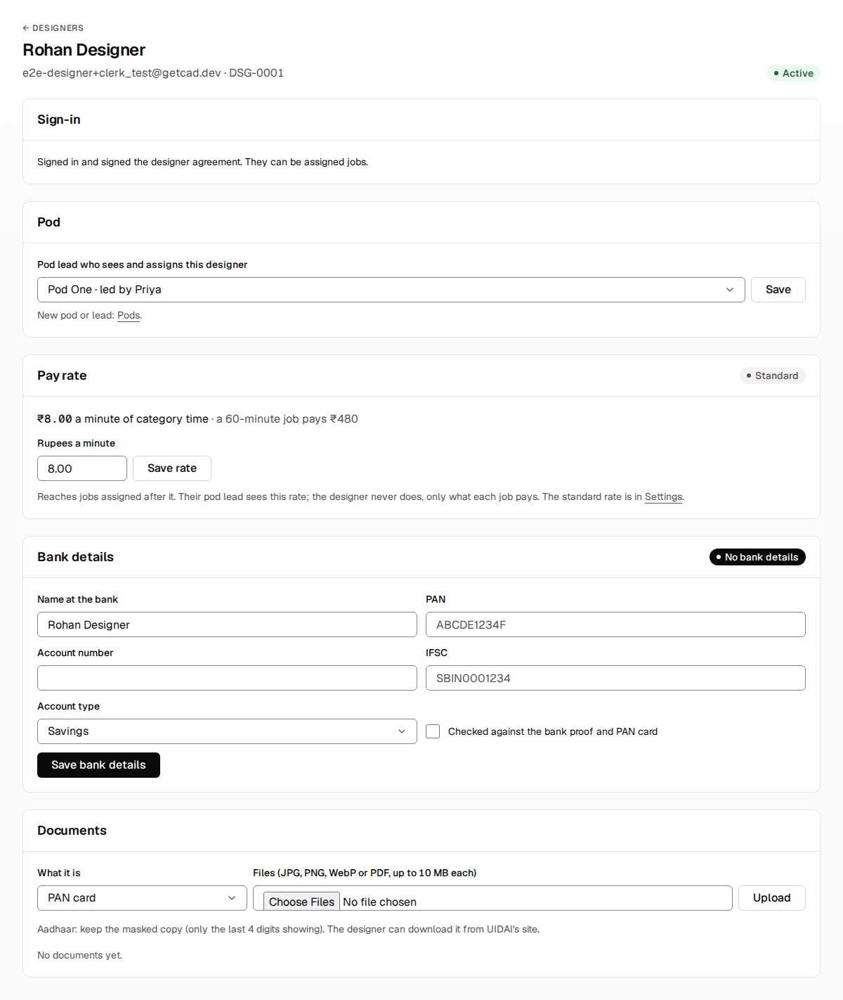
Place a designer in a pod, or remove them
On the designer's page → Pod → choose Pod lead who sees and assigns this designer → Save. Choose Not in a pod to take them out. You can also do this on Pods (below). A designer is in one pod at a time.
Set a designer's own pay rate
On the designer's page → Pay rate:
- Enter Rupees a minute (for example
9.50). - Click Save rate.
- To go back to the standard rate, click Back to standard (₹8.00). It appears only while an own rate is set. The card's pill reads Own rate or Standard.
The new rate reaches jobs assigned after the change; jobs already assigned keep their pay. The pod lead sees the rate but cannot change it. The designer never sees a rate, only what each job pays. The standard rate (₹8 a minute) is in Settings.
Record bank details and identity documents
Only admins see these, and every full view and document open is logged.
- Bank details, on the designer's page:
- Enter Name at the bank, PAN (format
ABCDE1234F), Account number, IFSC (formatSBIN0001234) and Account type (Savings or Current). - Tick Checked against the bank proof and PAN card once you have verified them.
- Click Save bank details (Replace bank details if some exist).
- Saved details show masked. Show in full reveals them once ("Each view is recorded in the audit log."); Hide masks them again.
- Enter Name at the bank, PAN (format
- Documents:
- Under What it is, choose PAN card, Aadhaar (masked copy), Bank proof (cheque or passbook), Photo or Other.
- Choose the Files (JPG, PNG, WebP or PDF, up to 10 MB each).
- Click Upload.
- Each document has Open and Remove. Removing deletes the file.
- Keep only the masked Aadhaar: the last 4 digits showing.
A designer can also enter their own bank details under Account → Payout details. Saving new details sends them for checking again.
Pod leads and pods
Make someone a pod lead
- The person signs in once, which creates their account.
- Access → find them → set Role to Pod lead.
- The platform creates their pod straight away, named after their first name, for example "Masud's pod".
- If a pod lead somehow has no pod, Access → Pods lists them under Pod leads without a pod with Create their pod.
A pod lead without a pod can receive no orders and has no designers.
Create a pod, change its lead, add or remove designers
Open: Access → Pods (/). Admin only.
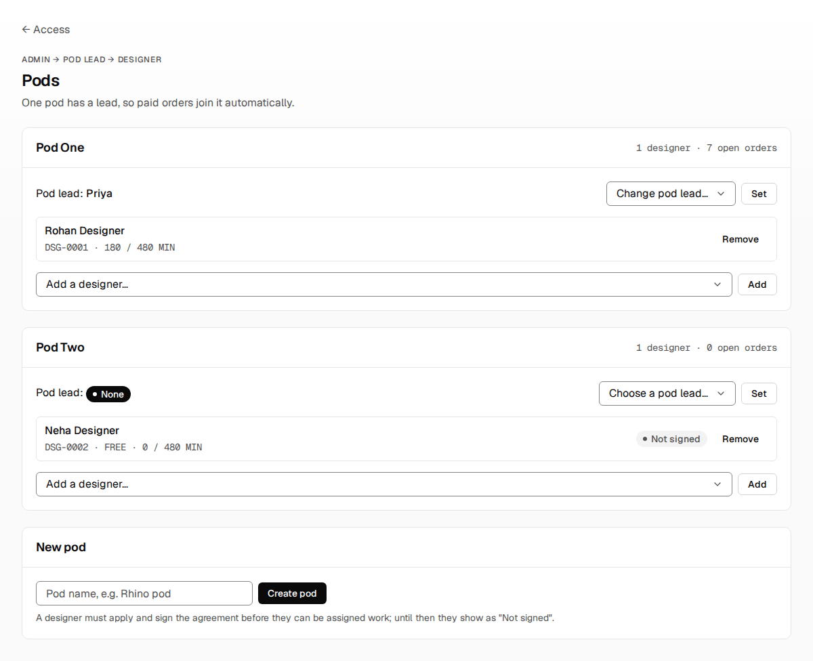
- The header says how routing works now:
- "One pod has a lead, so paid orders join it automatically."
- Or: "With more than one pod, each paid order waits in the Queue until you choose its pod."
- Each pod shows its designer and open order counts and its Pod lead.
- To change the lead: Change pod lead… → Set.
- Designers who have not signed the agreement carry Not signed.
- Remove takes a designer out of the pod.
- Add a designer… → Add puts one in.
- New pod: type the name (for example "Rhino pod") → Create pod. Then set its lead and add designers.
Staff accounts and roles (Access)
Who: Ops or Admin. Open: sidebar → Access (/).
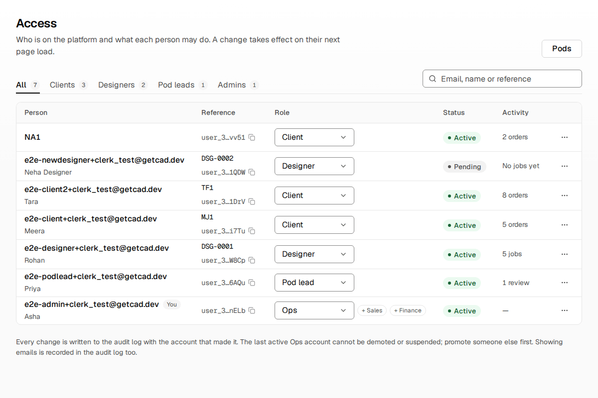
- Tabs: All, Clients, Designers, Pod leads, Admins (Ops, Sales and Finance).
- Search accounts by email, name or reference (ACC… for clients, DSG… for designers).
- Each row:
- the person, with You on your own row;
- their reference;
- the Role menu, with any additional roles as "+ Sales" tags;
- the status pill;
- ⋯ (More).
- Pods (top) opens the pod screen.
Emails and names come from the sign-in service, and each look-up is logged. If that fails, the page says "Couldn't load emails — showing account references only".
Change someone's role
- Find the person. They must have signed in at least once.
- Choose the new Role: Client, Designer, Pod lead, Ops, Sales or Finance.
- The change saves at once (a message confirms it) and applies on their next page load.
Make someone a full Admin
A full Admin needs Sales, Ops and Finance. The Access screen sets only one, the primary role.
- Set their primary role on Access. Choose Ops: refunds and releases then need a Finance-primary person; see why.
- Ask technical support to add the other two roles as additional roles.
- Check: the person's Account page lists all three, and Access shows "+ Sales" "+ Finance" tags.
Suspend or reinstate an account
- Access → the person's row → ⋯ (More) → Suspend….
- Read the dialog: "Suspend, never delete: their orders, files and history stay as they are. You can reinstate them from the same menu."
- Type
suspendin Type suspend to confirm. The button stays disabled until you do. - Click Suspend account.
- To undo it: ⋯ → Reinstate.
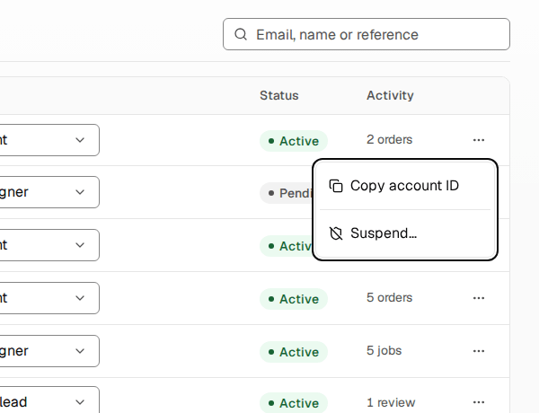
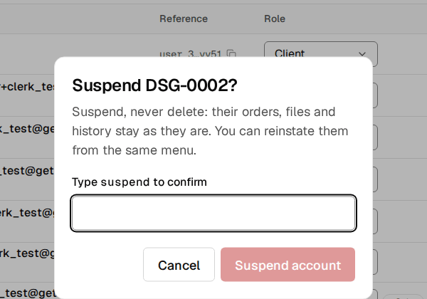
⋯ → Copy account ID copies the internal ID, which technical support asks for.
A suspended designer cannot be assigned. Jobs they already hold stay with them until you move or take them back.
Clients
Open: sidebar → Clients (/). Admin only.
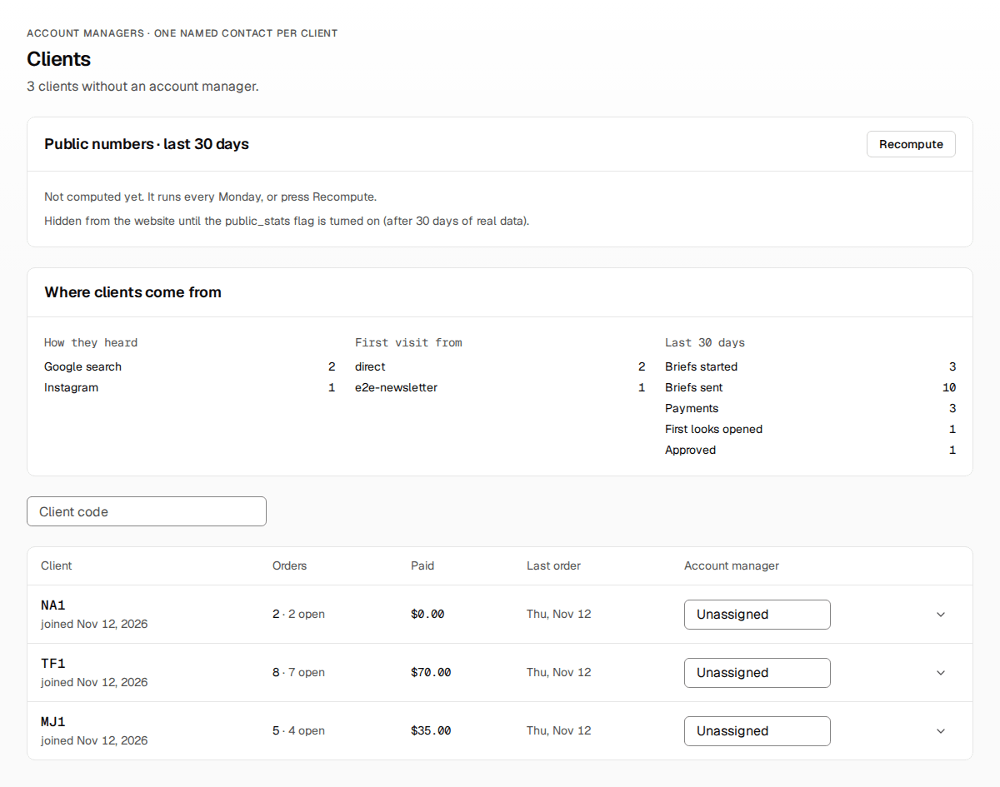
- Public numbers · last 30 days. These are the figures the public Results page would show:
- first looks on time, approved first time, late credits, claims upheld, designs delivered.
- They are computed every Monday; Recompute updates them now.
- They stay hidden from the website until the Public results page switch is on (Settings).
- Where clients come from:
- How they heard (asked at sign-up);
- First visit from (the first web link or campaign);
- Last 30 days: Briefs started, Briefs sent, Payments, First looks opened, Approved.
- Search by client code.
- The table:
- Client (code and join date);
- Orders (and how many open);
- Paid (US dollars);
- Last order;
- Account manager.
Name an account manager. Choose a team member in the client's Account manager menu. It saves at once ("NJ1 is now looked after by …"). Choose Unassigned to clear it. The header counts clients without one.
Client names are not on this page; clients are listed by code. To find a client by name, email or phone, use the search on Create order.
Website contact leads
Who: Ops, Sales or Admin. Open: sidebar → Leads (/).
Messages from the website contact form, with name, email, what they are ("Jewelry business", "CAD designer", "Other") and the message. Tabs: New, Handled, All.
- Reply from your own email.
- Click Mark handled. Reopen brings it back to New.
Messages, files and visibility
Two conversations per order
Every order has two separate conversations. The database keeps them apart.
| Tab on the order | Members | Never seen by | Notes |
|---|---|---|---|
| Client tab (client ↔ team) | The client; the pod lead; admins | The designer | To the client, every team message comes from "Your team". Team members see each other as "Team · first name". Opens with the client's brief as the first message. |
| Designer tab (team ↔ designer) | The designer; the pod lead; admins | The client | The designer's copy of the brief never names the client. |
| Old messages | Admins only | Everyone else | Read-only messages from before the current chat (version 1). Shown only when they exist. |
Messages
Open: sidebar → Messages (/). On an order, the conversations are also in the Conversations card.
- The list shows every order's conversation, with the latest message and an unread count.
- Filters, each with a count: All, Unread, Needs reply (the client or designer wrote last), No messages.
- Search conversations by order number or product.
- The conversation:
- All conversations (back, on a phone);
- the order title;
- the order-details button, which opens Brief, Files and Open the order.
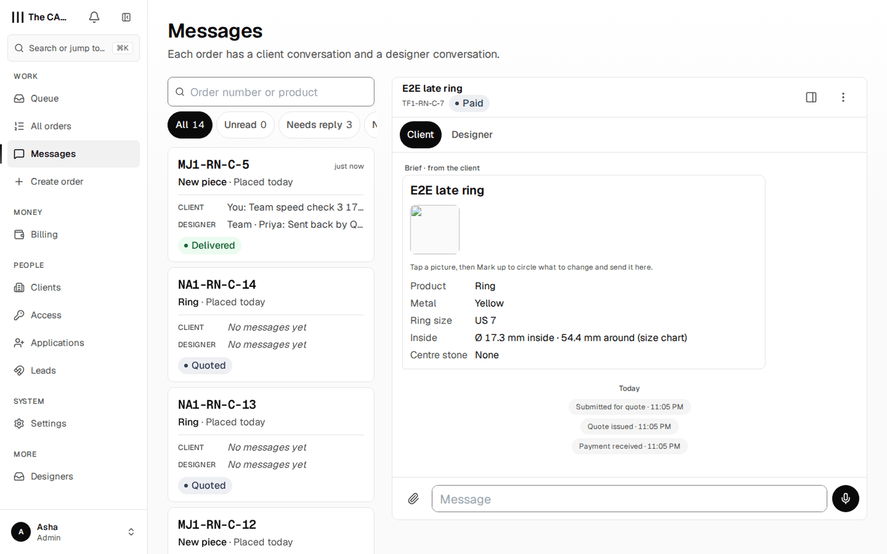
Writing a message
- Choose the tab: Client (the conversation with the client) or Designer (the conversation with the designer).
- Type in Message.
- Attach (paper clip) offers Camera, Photos or File (up to 25 MB each).
- The microphone records a voice message.
- Click Send (the arrow).
- A tick shows Sent; a double tick shows Read.
- A failed message says "Not sent · Tap to retry".
Marking up a picture. Open any picture in the conversation, the brief's included, and click Mark up. Draw in one of three ways:
- drag around an area to circle it (the default);
- draw freehand;
- tap to drop numbered pins.
Undo and Clear correct mistakes. Done attaches the marked-up copy to your message.
Forwarding between the client and the designer. Only the team can forward.
- Under the message, click Forward to designer (on a designer's message: Forward to client).
- Read the note:
- to the designer: "The designer gets the text and pictures as 'Forwarded from the client'. Check it names nobody.";
- to the client: "The client gets it from the team, never from the designer by name."
- Click Forward to designer (or Forward to client) to send it, or Cancel. Files are cleaned again on the way. File types the destination cannot take are left out, and the message says how many.
Files on an order
| File | Who adds it | When the client gets it |
|---|---|---|
| Reference photos, certificate pictures (in the brief) | Client (or the team, on-behalf) | Always (their own) |
| Screenshots of the request (on-behalf orders) | The team | Always; designers never |
| Rhino 3DM, STL | Designer, in the job's upload slots | From approval |
| Render views (one image with four views), Technical sheet | Designer | From Ready to preview |
| QC certificate, Weight sheet (PDF) | Made by the platform after QC | After QC passes |
| Summary sheet (PDF) | Made by the platform | From approval |
| Files sent in a conversation | Anyone in that conversation | In their own conversation only |
Cleaning and names.
- Every upload is cleaned before it is stored. Author, studio and camera details are removed from 3DM, STL and image files, and Rhino blocks are exploded into plain geometry.
- Formats that cannot be cleaned are refused.
- Delivered files are named by the system (
ORDER_), fingerprinted, and archived read-only.SLOT_ vN
The team's Files panel on an order: Upload a file (PNG, JPEG or STEP), choose what it is, Upload. Each file shows its version (v1, v2…), Download, and Held where the client cannot have it yet.
Who sees what
| Item | Client | Designer | Pod lead | Admin |
|---|---|---|---|---|
| The order's price, payments and refunds | Own orders | Never | Never | All |
| Designer pay on a job | Never | Own jobs only | Jobs in their pod | All |
| Pod pay on a job | Never | Never | Jobs in their pod | All |
| A designer's pay rate (₹ a minute) | Never | Never | Their pod's designers, read-only | All; can change |
| Client identity (business, name, email, phone) | Own | Never; sees a job code only | Client code; contact details on orders the team placed | All (Create order search) |
| Designer identity | Never; sees "Your team" | Own | Their pod's designers, by name | All |
| Brief, reference pictures and pins | Own orders | Assigned jobs | Pod orders | All |
| Client's master instructions | Own (Account) | Assigned jobs | Pod orders | All; can edit for a client |
| Screenshots of an emailed or WhatsApp request | Own orders | Never | Pod orders | All |
| Client conversation (Client tab) | Own orders, as "Your team" | Never | Pod orders | All |
| Designer conversation (Designer tab) | Never | Own jobs | Pod orders | All |
| Render views and technical sheet | Once QC passes (Ready to preview onwards) | Own jobs | Pod orders | All |
| 3DM and STL files | From approval on; shown as Locked before | Own jobs | Pod orders | All |
| QC certificate and weight sheet | After QC passes | No | Pod orders | All |
| Summary sheet (PDF) | After approval | No | Pod orders | All |
| 3D preview link | Creates and shares it | No | No | No |
| Designer bank details and identity documents | Never | Last 4 digits of their own account | Never | All; every full view and document open is logged |
The client's emails carry no designer, pod lead or staff names.
Notifications and email
The platform tells people about events in three ways. They are separate, and only one of them proves a message reached an inbox.
| Channel | Where it appears | Who gets it | Depends on |
|---|---|---|---|
| In-app notification | The bell (top of the sidebar; top bar on a phone), the unread count on Messages, and a pop-up "toast" with Open while the portal is open | Clients, designers, pod leads and admins, as listed below | Nothing: always written |
| Phone or desktop push | The device's own notification centre | Anyone who turned on Notifications under Account → On this device on that device | Push keys configured on the server; the 5-minute dispatch job running. Text never names people or amounts |
| The person's inbox | Clients (order emails), designer applicants, website enquirers | EMAIL_ on the server. Until then every email goes to the test inbox instead |
In-app notifications: what triggers them
| Event | Who is notified | Text they see |
|---|---|---|
| Client writes in the client conversation | The order's pod lead | "New message from the client." |
| Team writes in the client conversation | The client | "New message from the team." |
| Designer writes in the designer conversation | The order's pod lead | "New message from the designer." |
| Team writes in the designer conversation | The designer | "New message from the team." |
| Order quoted | Client | "Your order has been quoted." |
| Order paid and confirmed (clock starts) | Client; pod lead | "Your order is confirmed and paid — the first-look clock has started." / "An order in your pod is confirmed and paid — the clock is running." |
| Designer assigned | Designer | "You have been assigned to an order." |
| Job moved to another designer | Old designer; new designer (when it was waiting on changes) | "A job was moved to another designer" / "A job waiting on changes was moved to you" |
| Job taken back | Designer; every admin | "A job was taken back from you" / "A job was taken back from its designer and is waiting for a designer again" |
| Designer sends to QC | Pod lead; client | "A job in your pod is ready for QC." / "Work has been submitted on your order." |
| Due in 60 minutes / overdue to QC | Designer (both); pod lead (overdue) | "Job … is due to QC within the hour" / "Job … is past its due time to QC" / "Job … is overdue to QC" |
| Pod lead passes QC | Client | "Your order is ready to preview." |
| Client asks for changes | Designer; pod lead | "Changes requested (round n)…" / "The client asked for changes (round n)." |
| Client approves | Designer; pod lead | "The client approved this job." / "The client approved an order in your pod." |
| Order delivered | Client | "Your order has been delivered." |
| First-look deadline passed | Pod lead | "The first-look deadline on an order in your pod has passed." |
| Late credit issued | Client | "We missed the first-look deadline on your order — a credit has been issued." |
| Client raises a problem (dispute) | Designer | "A dispute was raised on your order." |
| Dispute resolved | Client; designer | "A dispute on your order was resolved." |
| Pod lead escalates a job | Every admin | "A pod lead escalated a job" |
| Admin resolves an escalation | The pod lead who raised it | "An admin resolved your escalation" |
| Client opens a spec claim | Pod lead | "A client opened a spec claim. Re-measure the archived file." |
| Spec claim decided | Client (and the pod lead, for the free fix when upheld) | Result of the claim |
| Client orders a change after approval | Pod lead | "A client ordered a change to an approved design. It needs a quote." |
| Team places an order for a client, with the email box ticked | Client | "The team placed an order for you." |
| Payout batch marked paid | Each payee | "Your pay of ₹… for this job was sent." |
| Order refunded | Client | "Your order has been refunded." |
Emails
Client emails are sent by the database event, never by a page, and each can be sent only once per event.
| Event | Client can turn it off | |
|---|---|---|
| Client creates their own account | Welcome | No |
| Portal order sent for a price | Order received | No |
| Order quoted (each new price) | Quote ready | No |
| Quote unpaid for 24 hours | Quote reminder | Yes (Reminders) |
| Payment received | Payment received | No |
| Paid and confirmed (clock starts) | Order confirmed, with the due time in US Eastern time | No |
| First look ready / revised design ready | First look ready / Revised design ready | No |
| Changes requested | Revision received | No |
| Design waiting 48 hours | Preview reminder | Yes (Reminders) |
| Approved / delivered | Design approved / Files delivered | No |
| 72 hours after delivery | Feedback request | Yes (Reminders) |
| Problem raised, refunded, cancelled (not a draft), first look missed, late credit decided | Matching email | No |
| Team writes in the client conversation | New message (at most one per order every 30 minutes) | Yes (Messages from your team) |
| Team places an order for the client, with the email box ticked | Order placed for you | — |
| Designer application received / accepted / rejected | Matching email to the applicant | — |
| Website contact form | Acknowledgement to the sender | — |
Not sent by email at all: anything to designers about jobs (assignment, revisions, QC), anything to pod leads, and anything to admins. These are in-app and push only. There is no invoice email; the platform has no invoices yet.
Check whether emails reach clients
Open: Settings → Email previews (/).
- The banner shows the mode:
- "Live: emails go to their real recipients."
- Or: "Test mode: every email goes to test inbox, with the real recipient in the subject. Clients receive nothing until EMAIL_DELIVERY=live."
- Every template with sample data, marked Always sent or Can turn off.
- **Send all N to *test inbox***: sends every template to the test inbox, so you can check how they look in Gmail, Outlook and Apple Mail.
Money
Prices, categories and pay
Client prices are in US dollars. The website shows one price, "from $35 a design". The bands below are the internal defaults the quote form uses when Price $ is left empty.
| Band | Categories | Typical pieces | Price |
|---|---|---|---|
| Standard | A–C | Bands, solitaires, simple pendants and earrings | $35 |
| Complex | D–F | Halo, pavé, multi-part, bracelets | $85 |
| Sculpted / figurative | G–L | Signets with figures, sculpted, large multi-part | From $120, quoted; deadline in hours set with the price |
Team pay is in Indian rupees. It is set from the category's minutes, never from the price, so the price cannot be worked back from anyone's pay.
| Rule | Default | Changed on | |
|---|---|---|---|
| Designer pay | Category minutes × the designer's rate | ₹8 a minute (A ₹120, C ₹360, D ₹480, L ₹3,840) | Settings → Money → Designer pay; one designer's own rate on their page |
| Pod pay (to the pod lead who ran QC) | A share of the designer's pay on the job, with a minimum | 50%, at least ₹300 | Settings → Money → Pod pay, Least pod pay |
| Payout warning | Flags a quote when designer + pod pay exceed this share of the price | 40% | Settings → Money → Payout warning |
| Exchange rate | Fixed rate used for that share | ₹84 per $1 | Settings → Money → Exchange rate |
Pay is set at quote with the standard rate. It is set again at the assigned designer's rate when the job is assigned or moved. A rate or setting change reaches jobs assigned after it. QC send-backs are not paid extra. A change the client orders after approval is a new job at its own category.
Billing
Who: Admin or Finance. Open: sidebar → Billing (/).
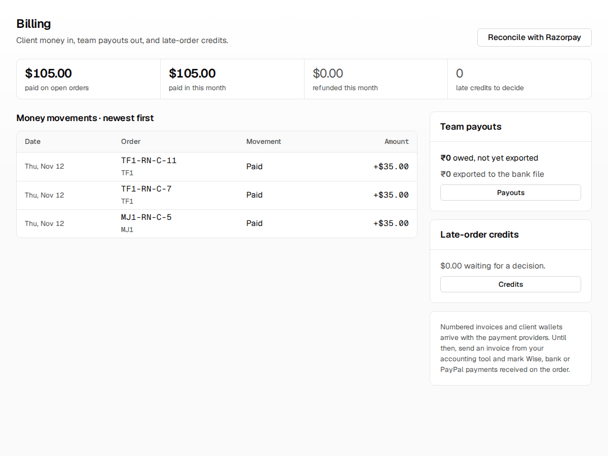
Figures across the top:
| Figure | Counts |
|---|---|
| paid on open orders | Card payments and recorded transfers still held on orders not yet released or refunded (US dollars) |
| paid in this month | Payments recorded since the 1st of this calendar month (UTC) |
| refunded this month | Refunds recorded since the 1st of this calendar month |
| late credits to decide | Pending first-look credits |
The rest of the page:
- Money movements · newest first. Up to 200 rows: Date, Order (with the client code), Movement (Paid, Released, Refunded, Processor fee, Chargeback, Reversal) and Amount with + or −. Click a row to open the order.
- Team payouts. Rupees owed and not yet exported, rupees exported to the bank file, and a link to Payouts.
- Late-order credits. How much is waiting for a decision, and a link to Credits.
- Reconcile with Razorpay (top right) opens the Razorpay dashboard in a new tab.
Pay designers and pod leads
Who: Finance or Admin. Open: Billing → Payouts (/).
Pay becomes owed when an order is Closed: one row for the designer and one for the pod lead who ran QC.
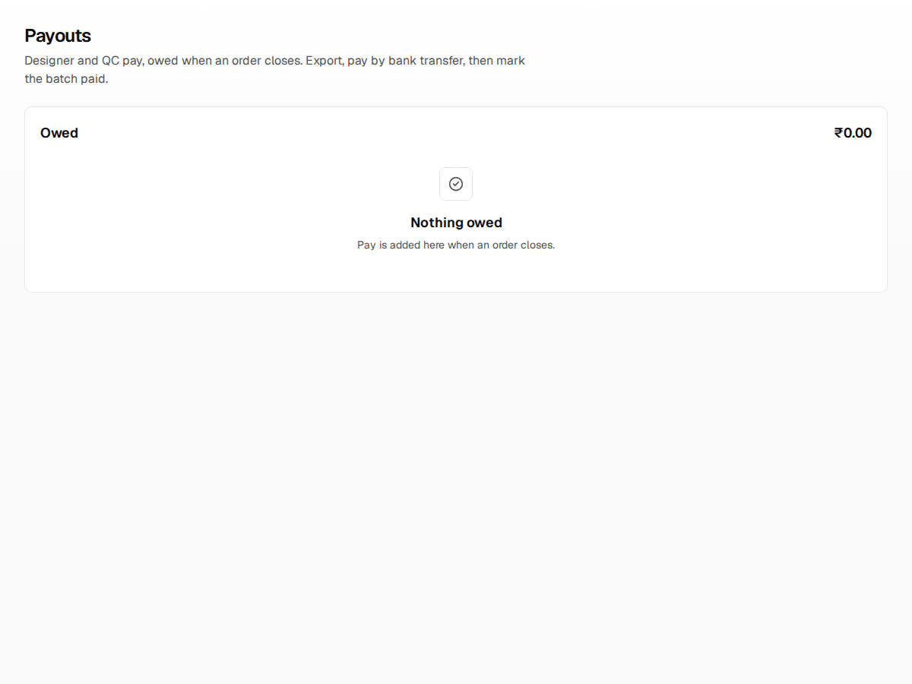
- Owed lists each row: the payee, the order, the amount, and their bank state (bank verified, bank not yet verified, bank rejected).
- Click Export N as a batch (₹total). "Rows without usable bank details stay owed."
- The batch appears below with its reference and "exported …, not yet marked paid". Click Download CSV.
- Pay each line by bank transfer from the CSV.
- Back on Payouts, click Mark batch paid.
Bank details:
- Designers enter their own under Account → Payout details, or an admin records them on the designer's page.
- Pod leads enter theirs from Earnings → Add bank details.
- A payee with no bank details, or rejected ones, stays owed until fixed.
Exports and reports
| What | Where | Format |
|---|---|---|
| Every order | All orders → Export CSV | CSV |
| A payout batch | Payouts → the batch → Download CSV | CSV |
| A pod's performance (designers' output, working time, turnaround, quality) | Performance (pod lead view, also reached from an escalation) → download buttons | Excel, CSV, PDF |
| Public numbers and client sources | Clients (on screen) | — |
| An order's certificate, weight sheet, summary sheet | The order's Order card |
Settings, switches and audit history
Settings
Open: sidebar → Settings (/). Only a full Admin can change values; other staff see "Read-only. An admin (Sales + Ops + Finance) can change these."
"The numbers the platform runs on. Changes apply from now on and are recorded in the audit log." Each section shows Last changed by a person and a time.
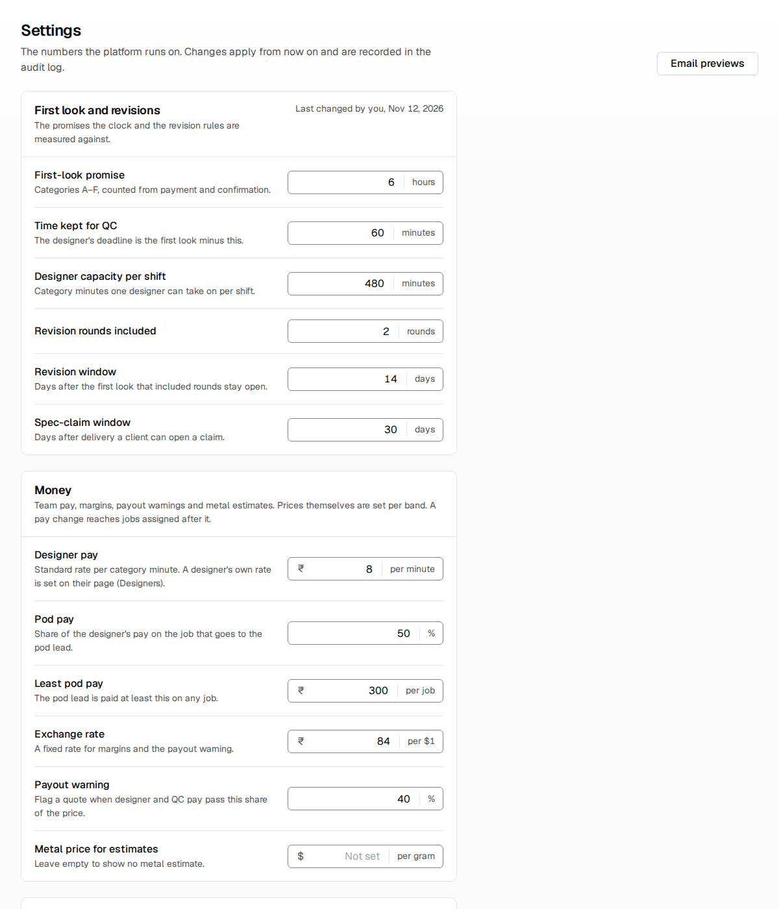
| Section | Setting | Unit | Default | Effect |
|---|---|---|---|---|
| First look and revisions | First-look promise | hours | 6 | The standard (A–F) first-look deadline, counted from payment and confirmation |
| Time kept for QC | minutes | 60 | The designer's deadline is the first look minus this | |
| Designer capacity per shift | minutes | 480 | Category minutes one designer may hold at once before a warning | |
| Revision rounds included | rounds | 2 | Client change rounds included in the price | |
| Revision window | days | 14 | Days after the first look that included rounds stay open | |
| Spec-claim window | days | 30 | Days after delivery a client can open a claim | |
| Money | Designer pay | ₹ per minute | 8.00 | The standard rate |
| Pod pay | % | 50 | Share of the designer's pay that goes to the pod lead | |
| Least pod pay | ₹ per job | 300 | Minimum pod pay on any job | |
| Exchange rate | ₹ per $1 | 84.00 | Used for margins and the payout warning | |
| Payout warning | % | 40 | Flag a quote when team pay passes this share of the price | |
| Metal price for estimates | $ per gram | empty | Leave empty to show no metal estimate | |
| Metal densities | 10K gold, 14K gold, 18K gold, Platinum 950, Sterling silver 925 | g/cm³ | 11.6, 13.1, 15.6, 21.4, 10.4 | Turn a model's volume into weights on the weight sheet |
| Spec sheet defaults | Minimum wall, Minimum prong | mm | 0.80, 0.80 | Printed on every spec sheet unless the order says otherwise |
To change values:
- Edit one or more fields. A bar appears at the bottom: "N changes not saved", listing each change as before → after.
- Click Save changes, or Discard. Invalid values are highlighted: "Fix the highlighted values first".
- A message confirms it: "Change saved" or "N changes saved". A refused value says why.
Developer · raw keys and stored values (folded at the bottom) lists every stored key, its raw value and description. It is for technical support.
Feature switches
On Settings → Features. "A switch applies at once. The database honours it too, not just this screen."
| Switch | Off (current default) | On |
|---|---|---|
| Block assignment over shift capacity | Over-capacity assignments only warn | Refused, except for an admin who gives a reason |
| Automatic late-order credit | An admin decides each missed first look | Not available to rely on yet: keep off |
| Payouts through Razorpay | Export the batch and pay by bank transfer | Not connected yet: keep off |
| Wallet, credit packs and plans | Off | Not built for clients yet: keep off |
| One-page render brief | (on by default) render orders use a one-page brief | — |
| Public results page | / hidden | Turn on after 30 days of real data |
| Rush delivery | Off | Not defined yet: keep off |
| Dental | Off | A separate brand, not part of this platform |
Audit history: who did what
Every decision is written to the audit history with the person who made it. That covers quotes, payments, assignments, moves, QC marks and decisions, credits, payouts, role and status changes, setting changes, bank-detail views and document opens.
Where to see it on screen:
- An order's Timeline: every status change and event on that order.
- A designer's page in Performance (pod lead view): Activity, the last 200 events.
- Settings: Last changed by per section.
How the accounts work together
The whole flow, seen from every seat. Use it to train a new admin, or to find where a stuck order went wrong.
This walkthrough follows one fictional order through every account. The names are invented: the client Northline Jewelers (client code NJ1), the piece "Aurora halo ring", a pod called Rhino pod, and two designers, DSG-0007 (new) and DSG-0003. The order includes one blocked handoff, one QC send-back and one client revision round.
Step 1 · The client sends the brief
- Who: the Northline buyer (Client).
- Control: New order → CAD design → fill The piece, Stones and Size & metal → Review → Send for a price.
- Changes: the page "Sent for a price" opens. On the order, the status sentence reads "We're pricing your brief".
- Received by: nobody gets a notification. The client receives the "Order received" email.
- Admin checks: Queue. The Awaiting quote counter goes up by one, and the order appears under Needs a move with Price it.
Step 2 · The team prices it
- Who: an Admin (or a Sales member).
- Control: Queue → Price it (opens the order) → Next step card → Category
C, Price $ (optional) left empty (the band price, $35) → Set quote. - Changes: the status pill becomes Quoted, and the order card shows Price, Designer pay and Pod pay.
- Received by: the client gets an in-app notification "Your order has been quoted." and the "Quote ready" email. Their order shows "Your price is ready" with Pay & start.
- Admin checks: the Queue counter Awaiting payment.
Step 3 · The client pays
- Who: the client, by card or UPI. Or, for a Wise transfer, an Admin or Finance member.
- Control (card): Pay & start → the pay button → Razorpay checkout. Control (transfer): the order → Next step → Paid by
Wise transfer, Reference (the transfer reference) → Mark paid. - Changes: the status becomes Paid. With only one pod led, the order joins Rhino pod automatically.
- Received by: the client gets the "Payment received" email and sees "Paid · we're checking your brief".
- Admin checks: the Queue row now reads "Paid · confirm the order to start the clock", with Confirm.
Step 4 · The admin confirms the brief
- Who: an Admin (a pod lead may also confirm).
- Control: the order → Next step → Confirm order.
- Changes: the first-look clock starts (6 hours for category C). The Queue row reads "Paid and confirmed · the pod lead assigns a designer".
- Received by: the client is notified "Your order is confirmed and paid — the first-look clock has started." and gets the "Order confirmed" email with the due time. The pod lead is notified "An order in your pod is confirmed and paid — the clock is running."
- Admin checks: the First look column on the Queue shows the time left.
Step 5 · Blocked handoff: the new designer cannot be chosen
- Who: the Rhino pod lead.
- Control: QC queue → Team board → the order under Unassigned → Assign to….
- What they see: DSG-0007 is listed but greyed out, marked "· not signed" ("(not signed up)" on the order page). The admin added DSG-0007 to the pod yesterday, but DSG-0007 has not yet signed the designer agreement.
- Resolution: the pod lead writes to an admin, or assigns DSG-0003 instead. The admin opens Designers → DSG-0007, sees Waiting to sign in, and sends DSG-0007 the sign-in instructions shown on that page. Once DSG-0007 signs in and presses I have read and agree — sign, the status becomes Active and the name is selectable.
- Admin checks: Designers. The status pill reads Active, and the Pods page no longer says "Not signed".
Step 6 · The pod lead assigns
- Who: the pod lead.
- Control: Assign to… → DSG-0007 ·
0/→ Assign.480 - Changes: the job moves into DSG-0007's column on the team board. The order says "Assigned to DSG-0007 · not started yet". Designer pay is set at DSG-0007's rate.
- Received by: DSG-0007 is notified "You have been assigned to an order." The job appears on their Home under Needs you as "New job".
- Admin checks: the Queue counter With designer. On the order, Designer shows DSG-0007.
Step 7 · The designer builds version 1 and sends it to QC
- Who: DSG-0007.
- Control: Open jobs → the job → Start work. Upload the four files (Rhino 3DM, STL, Render views, Technical sheet). Save the Model volume. Fill Gold weight and diamonds → Save weights. Mark every Designer check line Pass. Then Final review and send to QC → Send to QC.
- Changes: the job reads "With your pod lead for QC".
- Received by: the pod lead is notified "A job in your pod is ready for QC." The client is notified "Work has been submitted on your order." and sees "We're checking the design".
- Admin checks: the Queue counter In QC.
Step 8 · QC sends it back once
- Who: the pod lead.
- Control: QC queue → Awaiting QC → Start review. Under All measurements, type a finding and a remark, then Fail. Then Send back · revision needed.
- Changes: the status becomes Revision requested. QC send-backs do not use up the client's revision rounds.
- Received by: DSG-0007 sees the failed line under Pod lead notes on the job, then presses Start work again and sends version 2.
- Admin checks: the order Timeline shows the send-back. The Queue counter is back to With designer.
Step 9 · QC passes it to the client
- Who: the pod lead.
- Control: mark all five QC manager lines Pass → fill Measured specification → Record measurements → Approve · pass to client.
- Changes: the status becomes Ready to preview. The first look is recorded and the clock stops: on time.
- Received by: the client is notified "Your order is ready to preview." and gets the "First look ready" email.
- Admin checks: the Queue counter With client. The First look column says Done.
Step 10 · The client asks for one change
- Who: the client.
- Control: Review → under Ask for changes, describe the change (sizes in mm, which view, which part) → Send changes.
- Changes: the client's page shows "1 of 2 rounds used" and "Your changes are being made".
- Received by: DSG-0007 and the pod lead are notified "Changes requested (round 1)…". The job comes back as "Changes requested" with Changes the client asked for.
- Admin checks: the order's Revisions section lists round 1. DSG-0007 sends version 3, and QC passes it as in steps 7–9.
Step 11 · The client approves
- Who: the client.
- Control: Review → Approve this design.
- Changes: the status becomes Approved. The STL, 3DM and summary sheet unlock in the client's Files.
- Received by: DSG-0007 and the pod lead are notified "The client approved…". The client gets the "Design approved" email.
- Admin checks: the Queue row reads "Client approved · deliver the files" with Deliver.
Step 12 · The team delivers and closes
- Who: an Admin (or an Ops member).
- Control: the order → Next step → Delivered. Later, Next step → Closed.
- Changes: the order goes from Delivered to Closed. Closing creates the designer's and the pod lead's pay as Owed.
- Received by: the client gets "Your order has been delivered." and the "Files delivered" email.
- Admin checks: the Queue counter Ready for payout. Payouts lists two owed rows for this order.
Step 13 · The team is paid
- Who: an Admin (or a Finance member).
- Control: Billing → Payouts → Export … as a batch → Download CSV. Pay by bank transfer from the CSV, then Mark batch paid.
- Received by: DSG-0007 and the pod lead are notified "Your pay of ₹… for this job was sent." The amount shows under their Earnings.
- Admin checks: the batch no longer says "not yet marked paid".
Reference
Permissions matrix
The database enforces every row of this table. Own means the client's own orders. Assigned means jobs assigned to that designer. Pod means orders and designers in the pod lead's own pod. All means everything. A dash means never.
| Item and action | Client | Designer | Pod lead | Admin |
|---|---|---|---|---|
| Orders: view | Own | Assigned (no price, no client identity) | Pod (no price) | All |
| Create an order | Own (portal) | — | For a client, in their pod | For any client |
| Write or edit the brief | Own, until priced | — | On-behalf orders in the pod | On-behalf orders |
| Set the quote | — | — | — | All (Sales role) |
| Record a transfer (Mark paid) | — | — | — | All (Finance role) |
| Choose or move the pod | — | — | — | All |
| Confirm order | — | — | Pod | All |
| Assign a designer | — | — | Pod | All (exception; Ops role) |
| Move or take back a job | — | — | Pod | All |
| Escalate a job | — | — | Pod | — (admins resolve) |
| Start, pause, send to QC | — | Assigned | — | — |
| QC pass or send back | — | — | Pod | — |
| Approve, ask for changes, raise a problem | Own | — | — | — |
| Deliver, close | — | — | — | All (Ops role) |
| Refund, resolve a dispute by refund | — | — | — | All (Finance as primary role) |
| Resolve a dispute by rework | — | — | — | All (Ops as primary role) |
| Cancel or delete | Own, before payment | — | — | — (nothing is deleted) |
| Files: upload deliverables | — | Assigned | — | — |
| Download deliverables | Own (renders from preview; 3DM and STL from approval) | Assigned | Pod | All |
| Certificate, weight sheet | Own, after QC | — | Pod | All |
| Summary sheet | Own, after approval | — | Pod | All |
| Messages: client conversation | Own | — | Pod | All |
| designer conversation | — | Assigned | Pod | All |
| Forward between the two | — | — | Pod | All |
| People: add designers; bank details; documents | — | Own bank details | — | All |
| Place designers in pods; create pods; set pod leads | — | — | — | All |
| Set a designer's own rate | — | — | View, pod | All |
| Change roles; suspend; reinstate | — | — | — | All (Ops role) |
| Applications, leads | — | — | — | All (Sales or Ops role) |
| Account managers; client list | — | — | — | All |
| Money: Billing | — | — | — | All (Finance role) |
| Payouts: export, mark paid | — | — | — | All (Finance role) |
| Late credits: decide | — | — | — | All |
| Spec claims: decide | — | — | Pod | All |
| Own earnings | — | Own | Own | — |
| System: change Settings and switches | — | — | — | All (full Admin only) |
| Share or remove pod materials | — | View, own pod | Pod | All |
| Performance | — | — | Pod | Opens from escalations |
Staff with one role only have the single slice named in brackets. The table of staff roles shows each one.
Status and handoff table
Every order carries one status. The team sees it as a status pill (for example Paid) and, on the Queue, as a stage (for example Ready to assign). The client sees a plain sentence instead (for example "Paid · we're checking your brief"). The table lists them in the order a normal job moves through them.
| Status pill | Queue stage | What it means | Who acts next, and the control that moves it on | What the client sees | What the designer sees |
|---|---|---|---|---|---|
| Draft | (not on the Queue) | The client is still writing the brief | Client: Send for a price on the Review step | "Finish your brief" · Continue | Nothing |
| Submitted | Awaiting quote | Brief sent; no price yet | Sales or Admin: Set quote on the order | "We're pricing your brief" | Nothing |
| Quoted | Awaiting payment | Price set and shown to the client | Client: Pay & start. Or Finance/Admin: Mark paid for a transfer | "Your price is ready" · Pay & start | Nothing |
| Paid | Ready to assign | Money received. Still needs a pod, a confirmation and a designer | Admin: choose the pod (if asked) and Confirm order. Pod lead: Assign | "Paid · we're checking your brief", then after confirmation "Confirmed · your designer starts shortly" | Nothing |
| Assigned | With designer | A designer has the job but has not started | Designer: Start work | "Your designer is working on it" | The job under Open jobs ("New job") |
| In progress | With designer | The designer is working; their clock runs (it stops while paused) | Designer: Send to QC from the final review | "Your designer is working on it" | Their job, with the clock |
| Work submitted | In QC | Momentary: the platform moves it to QC review at once | — (automatic) | "We're checking the design" | "Submitted to QC" |
| In QC review | In QC | The pod lead checks the work | Pod lead: Approve · pass to client or Send back · revision needed | "We're checking the design" | "With your pod lead for QC" |
| Revision requested | With designer | Back with the designer: a QC send-back or the client's changes | Designer: Start work, then send to QC again | "Your changes are being made" | "Changes requested" with the notes |
| Ready to preview | With client | The first look (or a new version) is with the client | Client: Approve this design, Send changes, or Raise a problem | "Your design is ready" / "A new version is ready" · Review | Nothing new |
| Approved | Ready to deliver | Client approved; their files unlock at once | Ops or Admin: Delivered | "Files ready" · Download | Notification "The client approved this job." |
| Delivered | Delivered | Delivered to the client | Ops or Admin: Closed (the client's screen has no close button) | "Files ready" | Nothing new |
| Closed | Ready for payout | Finished. Designer pay and pod pay become owed | Finance/Admin: pay through Payouts | "Files ready" | Pay appears under Earnings |
| Payout released | (done) | Escrow released to the payout records | — | "Files ready" | — |
| Disputed | Dispute | The client raised a problem; the order is frozen | Ops: Send back for rework, or Finance: Refund the client… | "We're looking into a problem" · Message | Notification "A dispute was raised on your order." |
| Refunded | (done) | Money returned to the client | — | "Refunded" | — |
| Cancelled | (done) | Cancelled before payment, or a price declined | — | "Cancelled" | — |
The first-look clock. For standard pieces (categories A–F) the promise is a first look within 6 hours. The clock starts when the order is both paid and confirmed, whichever happens last. It stops when the pod lead passes the work to the client. Complex pieces (G–L) have the deadline set with the price. The designer's own deadline ("Due to QC") is the first-look deadline minus the time kept for QC (60 minutes by default).
Troubleshooting by symptom
Work through the checks in order. Stop at the first one that explains it.
"The designer is visible but cannot be assigned"
The name shows greyed out, marked "· not signed" on the Team board or "(not signed up)" on the order page.
- Designers → the designer. Is the status Waiting to sign in or Pending? They have not signed the current agreement. Send them the sign-in line from their page and ask them to sign. If they say they signed, ask whether they were asked to sign a new version.
- Access → the designer. Is the status Suspended? Reinstate them if that is intended.
- Access → is their role still Designer?
- Is the order in the same pod as the designer? Compare the order's Pod with the designer's Pod.
- Is the order Paid with no designer? An order that already has a designer is moved, not assigned (how). The error says "this job is already with a designer…".
- Is the error "Over capacity…"? Either Block assignment over shift capacity is on (an admin can override with a reason), or choose a designer with room.
- Still stuck: technical support, with the order reference and the designer's reference.
"The pod lead cannot see a designer at all"
- Designers → the designer → Pod. "Not in a pod"? Place them in the pod.
- Pods → is the pod led by this pod lead?
- Was the designer added as a designer? Access → role Designer.
"An order is missing from my Queue"
- The Queue lists only orders where the team moves next. An order with the designer, in QC or with the client is not listed; only the counter includes it. Use All orders or Search (Ctrl+K) with the reference.
- Is a stage filter on? Click Clear filter.
- Is it a Draft? Drafts are the client's private work until sent.
- Is it Cancelled or Refunded? Look under All orders → Closed.
"A job is missing from the pod lead's queue or board"
- Is the order in their pod? On the order, Pod. If it reads "Not chosen", choose the pod.
- Is it paid? Orders join a pod at payment or confirmation.
- On the board, an unassigned job without a category shows Set a category first.
- The QC queue lists only In QC review jobs. Everything else is on Team board or All orders.
"A job is missing from the designer's Open jobs"
- On the order, does Designer name them? If not, it was never assigned, or it was moved or taken back (see the Timeline).
- Access → are they Suspended?
- Once sent to QC, a job moves to the Submitted to QC tab of Open jobs.
"The client cannot see the file"
- Check the order's status. Render views and the technical sheet unlock at Ready to preview. The 3DM, STL and summary sheet unlock at Approved. Before that they show Locked or are absent.
- Is the client looking at the right order? Files are listed per order on Files.
- Did the designer upload into the right slot? The team's Files panel shows each version.
- A render-only order has no STL, 3DM, certificate or weight sheet.
- A file sent in the Designer conversation is never visible to the client. Forward it (how).
- Still missing: technical support, with the order reference and the file name.
"A notification did not arrive"
- Is it an event that notifies anyone? Check the trigger table. Admins are not notified of new orders or client messages. Client messages notify only the pod lead, and only once the order has a pod.
- In-app. Ask the person to open the bell. If the notification is there, the in-app part worked.
- Push. Did they turn on Notifications under Account → On this device, on that device? On iPhone the app must first be added to the home screen. Push is sent by a job every 5 minutes.
- Email. Open Settings → Email previews. In Test mode, nothing reaches clients. Did the client turn off that kind of email (Account → Email)? Only messages and reminders can be turned off. Did they check spam?
- Still nothing: technical support. Give the order reference, the time, and the email template name; the email outbox records every attempt and its error.
"The client paid but the order still shows Quoted"
- Wait a minute and reload. Card payments are confirmed by Razorpay to the platform, usually within seconds.
- Look in the Razorpay dashboard (Billing → Reconcile with Razorpay). Is the payment there and captured?
- If it is captured but the order is still Quoted, the confirmation did not reach the platform. Technical support can re-send it from Razorpay; doing so is safe and never double-counts.
- For a transfer, check your bank or Wise, then Mark paid.
"A button I expect is not there"
| Missing | Why | Fix |
|---|---|---|
| Set quote | Not Submitted; or you lack the Sales role | Check the status and your roles on Account |
| Mark paid | Not Quoted; or you lack the Finance role | Same |
| Confirm order | Already confirmed; or the order is past In progress | — |
| Assign (admin) | It is under Other actions ›; or the order already has a designer | Use Move it to another designer |
| Refund client, Release payout, Refund the client… | Shown only to a primary Finance role | Primary-role buttons |
| Send back for rework | Shown only to a primary Ops role | Same |
| Approve · pass to client | Only the pod lead, on the QC review | Admins cannot QC |
| A whole page says "Not available to your role" | That screen needs a role you do not have (for example Designers, Pods and Settings changes need a full Admin) | Make someone a full Admin |
"The designer cannot send to QC"
The Final review lists what is missing:
- every Designer check line must pass;
- all four files must be uploaded (Rhino 3DM, STL, Render views, Technical sheet);
- the Model volume must be saved;
- the gold weight must be saved.
The team can see progress on the order's Order card. One line gives the version, the designer and QC check counts, and the files uploaded.
"The clock did not start"
The clock starts only when the order is both paid and confirmed. The order's line says what it is waiting for: "The 6-hour clock starts once the order is paid and confirmed — waiting for …". Confirm or record the payment.
"A payout stays owed after export"
Rows without usable bank details are not exported. Designers → the payee → Bank details (or, for a pod lead, ask them to add theirs under Earnings → Add bank details). Then export again.
"Access shows references instead of emails"
The look-up of names at the sign-in service failed, or your role may not make it. The page says "Couldn't load emails — showing account references only". Reload. If it persists, technical support.
When to call technical support
- Granting or removing additional staff roles (making a full Admin).
- Anything needing the audit history beyond an order's timeline.
- Re-sending a payment confirmation from Razorpay.
- Email or push configuration (test mode, live mode, keys, the 5-minute job).
- Any error message that names the database ("refused", "permission denied") on an action this manual says you may do.
Give the order reference or account reference (or Copy account ID from Access), the time, and the exact message on screen.
Screen-by-screen reference
| Screen | Path | How to open | Purpose | Main controls | Guide |
|---|---|---|---|---|---|
| Queue | / | Sidebar · home page | Orders where the team moves next | Stage counters, alerts, row actions, Reconcile, Create order | Queue |
| All orders | / | Sidebar | Every order | Tabs, Search orders, Every stage, Save this view, Export CSV | All orders |
| Order (team) | / | Any order row | One order | Next step, Other actions ›, Brief, Conversations, Files, Timeline, Order card | Order page |
| Create order | / | Sidebar; Queue | Order for a client who emailed or used WhatsApp | Find the client, New client, The order, Screenshots, Place order | On behalf |
| Messages | / | Sidebar | Every conversation | Filters, search, tabs, forward, mark up | Messages |
| Billing | / | Sidebar | Money in and out | Figures, movements, Payouts, Credits, Reconcile with Razorpay | Billing |
| Payouts | / | Billing | Pay the team | Export … as a batch, Download CSV, Mark batch paid | Payouts |
| Credits | / | Queue alert; Billing | Late first-look credits | Decision, Amount, Reason, Decide | Credits |
| Clients | / | Sidebar | Clients by code | Recompute, search, Account manager | Clients |
| Access | / | Sidebar | Accounts and roles | Tabs, search, Role, ⋯ (Copy account ID, Suspend…, Reinstate), Pods | Access |
| Pods | / | Access → Pods | Pods, leads, members | Create their pod, Change pod lead…, Add a designer…, Remove, Create pod | Pods |
| Applications | / | Sidebar | Designer applications | Tabs, Accept, Reject, Reopen | Applications |
| Leads | / | Sidebar | Website contact messages | Tabs, Mark handled, Reopen | Leads |
| Designers | / | Sidebar → More | Your designers | Add designers, each designer's page | Designers |
| Designer | / | Designers | One designer | Sign-in, Pod, Pay rate, Bank details, Documents | Designers |
| Settings | / | Sidebar | Numbers and switches | Fields, Save changes, Discard, Features, Email previews | Settings |
| Emails | / | Settings → Email previews | Email mode and templates | Send all … to … | Email previews |
| Performance | / | Queue escalation alert | Escalations and pod figures | Resolve, filters, downloads | Escalations |
| Account | / | Your name → Account | Your identity and settings | Time zone, Notifications, Sign out | Account |
/ redirects to Access. / is an older summary page kept for links. / is the design team's component sample page; it is not used in operations.
Glossary
| Term | Meaning |
|---|---|
| Account reference | A person's short code (ACC… for clients, DSG… for designers). Quote it to support. |
| Assignable | A designer who is Active, has signed the current agreement and is in the order's pod. |
| Band | The default price for a group of categories: $35, $85, from $120. |
| Brief | The client's description of the piece: what it is, stones, size, metal, notes, reference photos. |
| Category (A–L) | The job's size in minutes, from A (15 min) to L (480 min). It sets the band and the team's pay. |
| Change order | A change the client orders after approval: a new order, priced on its own. |
| Client code | The client's short code on every order reference, for example NJ1. |
| Escrow / held | Money the client paid that the platform records as held against the order until it is released or refunded. |
| First look | The first version the client sees, after QC. The 6-hour promise is measured to it. |
| Master instructions | A client's standing factory rules, shown on every one of their orders. |
| On-behalf order | An order the team placed for a client from an email, WhatsApp or phone request. |
| Order reference | The order's code, for example MJ1-RN-C-12: client, product, category, number. |
| Pod / pod lead | A team of designers and the lead who assigns and checks their work. |
| Primary role | The one role set on Access. Some buttons follow it. |
| QC | Quality control: the designer's 9-line check, then the pod lead's 5-line check. |
| Revision round | One set of client changes. Two are included within 14 days of the first look. |
| Spec claim / waiver | A client's claim that a delivered file broke its spec sheet. A waiver is a spec the client asked to relax, recorded on the certificate. |
| Toast | A short message that pops up at the edge of the screen and fades. |